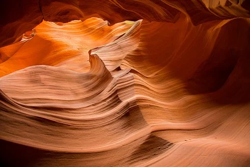
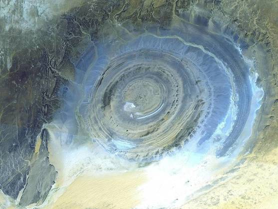

CAÑÓN DEL ANTÍLOPE | ||
|---|---|---|
|
EL CAÑÓN DEL ANTÍLOPE, EL GRAN SECRETO DE LOS NAVAJOS DONDE SE TEME A LA LLUVIA Lo que lo convierte en un lugar tan especial es el increíble espectáculo de luz que se genera cuando el sol entra en las oquedades que existen en la parte superior de la estructura | 
| |
|
Estados Unidos cuenta con uno de los lugares más bellos y, a la vez, más prohibidos, de todo el planeta, donde adentrarse sin la orientación de un experto no puede ser más que una temeridad que puede condenarte a muerte. Una estructura de roca arenisca donde la luz es capaz de generar uno de los efectos visuales más bellos que se pueden observar en la Tierra, donde el agua tiene mucho que decir: no solo fue la 'creadora' del Cañón del Antílope, sino que también es su gran peligro. Ubicado en el Condado de Coconino, junto a la localidad de Page, en Arizona (EEUU), fue descubierto por los indios navajos desde tiempos inmemoriales. Inundaciones repentinas y contundentes, unidas a la erosión generada por las rachas de viento, provocó que en mitad de la roca caliza se formara un desfiladero de impresionantes dimensiones, que pronto comenzó a ser utilizado por los antílopes para cruzar un terreno pedregoso de manera más segura que por su superficie. | ||
|  |
El Ojo del Sáhara, la misteriosa estructura del desierto que pudo ser la Atlántida | |
|
De ahí viene su nombre, convirtiéndose en un increíble festival de pasillos arenosos donde la luz del sol es capaz de generar impresionantes efectos que lo convierten en uno de los grandes espectáculos de la naturaleza. Está ubicado a unos 37 metros de profundidad y está dividido en dos partes -el Cañón del Antílope Superior y el inferior, separados entre sí por varios kilómetros- que, en conjunto, suman más de 600 metros de longitud de estrechas y bellas paredes calizas.
| ||
|
| ||
|
Los indios locales no solo conocen a la perfección el terreno, sino que son capaces de entender la meteorología del lugar y saber cuándo no se debe acceder. Por si fuera poco, el NOAA instaló en la zona una estación meteorológica y una bocina para facilitar la labor en caso de que vean complicaciones. Sin duda, el Cañón del Antílope es uno de los lugares más bellos del planeta, pero debe de ser visitado con precaución: la naturaleza sigue siendo más sabia que el ser humano. | ||
Comentarios | ||
|
¡Escribe un comentario!
| ||